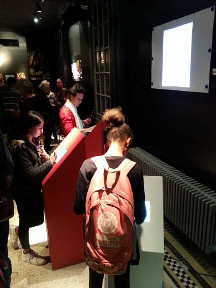
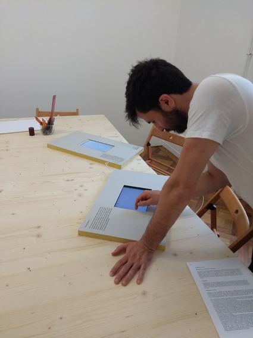
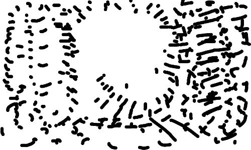

L’écran affiche les animations que les visiteurs sont en train de dessiner sur les tablettes. Quand personne ne dessine, une série d’animations choisies passe en boucle. Les visiteurs peuvent choisir d’ajouter leur animation à la série qui passe en boucle.
A animatou, les tablettes étaient dans des socles. 
A la villa Bernasconi, les tablettes étaient dans des planches. 
| couleur du trait | |
| épaisseur du trait | |
| durée de vie et rythme du trait | |
| effacer tout | |
| défaire | |
| refaire | |
| pause / play | |
| enregistrer l’animation pour l’intégrer dans l’exposition |

Nous comptons demander à 10-20 dessinateurs de créer des bouboucles spécialement pour les montrer dans l’exposition.
Soit:
Si on utilise des projecteurs ou des écrans, il faut pouvoir les connecter chacun à un ordinateur. Je ne sais pas combien d’écrans on peut connecter au même ordinateur.
Si on décide d’afficher les animations dans des tablettes, elles n’ont pas besoin d’être connectées à un ordinateur.
Marine a informé Vincent et Kevin de ces possibilités. Ils reprendront contact avec Andréas s’ils sont interéssés.
L’intérêt d’accompagner des musiciens en live, c’est qu’ils peuvent suivent le rythme de bouboucle. On peut facilement régler bouboucle à l’avance pour correspondre à n’importe quel rythme, mais c’est compliquer de l’adapter en cours de route à un rythme existant. (Quoique j’avais une fonctionnalité pour ça dans une ancienne version, mais on ne l’a jamais vraiment testée)
C’est intéressant d’accompagner de la musique même si bouboucle n’a pas exactement le même rythme. On pourrait faire comme la projection de dessins faits en direct lors des soirées à la Datcha (je crois?)